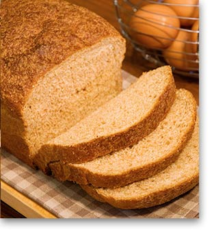
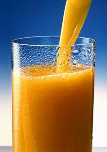
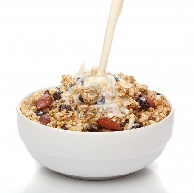
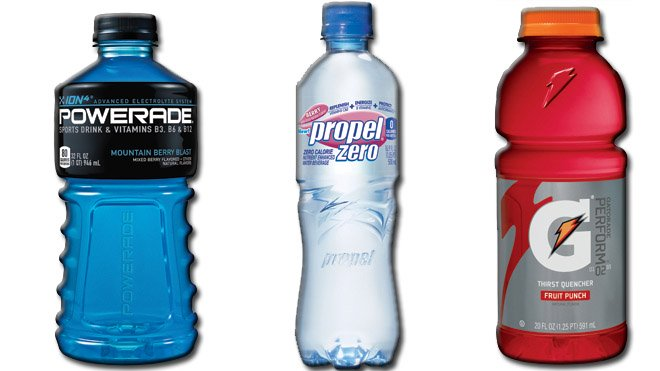
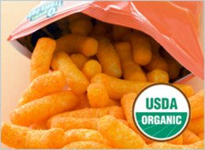

Top 5 "Healthy" Foods That Make You Fat

This list may be hard for you to accept since throughout your entire life you’ve been taught that these foods are healthy. I know I was raised to believe that.
But the fact remains that “processed food” is never better than “natural food.”
And when you’re trying to lose weight, processed food is especially your enemy despite their convenience and longer shelf-life.
Though after you reach your ideal weight you can get away with "cheating" in moderation, since your body is healthier and able to detox you from small amounts of bad food on its own.
After all, everyone knows a single cupcake or donut from time to time isn't going to kill you... unless you're already unhealthy from other bad food that's compounded.
With that said, the following list is the "best" (according to advertisers) out of the bad foods you might be eating and not realize.
(Side note: To register and see my special presentation on some truly powerful herbs, please click here.)


1. Whole Wheat Bread – Now you probably know already how bad white bread is for you. Put simply, white bread is the equivalent to eating candy…
They both contain high amounts of sugar, processed carbs (which are absorbed really fast in your body producing excess fat), high calories, no nutritional value, and end up making you hungry and tired after eating.
The truth is that whole wheat bread is not that far off from eating white bread. It still has lots of the same high calories, processed carbs, and not that much fiber. Basically you want to stay away from it because like GMO, this is a man-made grain!
The ancestor of this grain is known as Einkorn and is much smaller in comparison. This was breed to be larger and to grow in colder environments... kind of like how a dog was breed from a wolf.
Oh and if you’ve ever heard of the recent health craze over sprouted-grain breads, just know that if it's still wheat then it's still just as bad and only slightly better.
Substitute: Einkorn – This has more minerals and makes you feel fuller, so you’re not as hungry from eating empty calories (calories that provide you with no nutritional value) or empty "fiber."
The selenium found in Einkorn can also reduce your risk of many types of cancer. It also provides you with quality energy from being a healthy carb (yes there are healthy carbs, especially when the brain uses it as a fuel source) that’s sustained throughout the day, unlike from processed sugar which burns out quickly.
It has 80% of your daily value of manganese, which is good for synthesizing fatty acids that keep your nervous system in working order. Lastly, the oils found in Einkorn can help lower cholesterol. Not to mention it’s relatively affordable in bulk.

2. Fruit Juice – Okay, so you realize that soda is bad and hopefully you already stay away from that. I remember my old high school football coach preaching to us “Soda is Poison!” which is what got me off the stuff.
If I even try to drink soda now (since it’s been so many years) I will start to feel really sick. But what’s so bad about fruit juice?
Well if you think about it, fruit juice has a lot of sugar and no fiber. That's because sugar is added (or should I say "flavoring" is added) and the natural fruit gets unnaturally processed / pasteurized / concentrated before it makes it to the store.
If you were to freshly squeeze your favorite fruit juice at home and compared it to what the store has to offer you would notice a WORLD of difference. The color, smell, taste, the way it makes you feel... it's like drinking two completely different things.
This is the problem when any food is “processed.” The nutritional value (alkalizing minerals) found in that food will be lost... meaning the flavor is also lost and "additives" have to be used to make it taste better and "preservatives" are used so it can be stored for longer without going bad.
Substitute: Freshly Squeezed Fruit Juice – Most bottled water isn't enough. If you ever drank a whole bunch of water and then heard it moving around in your stomach or became bloated then you know something is wrong. Water (filtered and stripped of its minerals much like with fruit juice from the store) cannot absorb in our bodies. Water needs to have minerals in it. Whether you're squeezing some key lime into your water or juicing some guanabana or steeping tamarind in water... you're adding the minerals back in that you need.
A few interesting things to consider on your path to weight lose and general health… although you’re told to consume 8 cups of water a day, you gain water from eating whole fruit and from soup. So really you don't need 8 cups of water if you're getting it from other sources.
Also, there's a reason why in Asia their tea cups don't have handles on them. The body can't absrob a liquid if it's too hot or cold. You should be able to grab the cup with your hand (meaning it's around either room or body temperature) so it's easier on your digestion. There's also many herbal teas besides the traditional trio of green, black, and white teas.
Also, coconut water is very good to drink as another substitute. If you’re brave buy a whole coconut and cut a hole in it to place a straw to drink the water. Or you can get an easy to use tool like the "coco-jack." The plus is you can cut it open and scrap the inside to eat for even more natural minerals and sugars, which are healthy if they're natural sugars.
Besides it being so much fun to drink out of a coconut, it tastes really good. Just beware of drinking coconut water in a metal can, since the aluminum leeches into the drink.

3. Granola – The reason it’s so bad for weight lose is because it comes from unnatural wheat and oats. Also, when you eat granola cereal you typically consume milk with it. Milk is not good for losing fat and becoming healthy either.
Although the labeling on the package of granola can be very misleading, claiming to be extremely healthy... reducing the risk of heart disease... yada yada... the fact remains that it’s not if it's not from something natural like Einkorn, Fonio, Teff, Wild Rice, Amaranth, or Royal Black Quinoa. These seeds / plants were not man-made from farmers via techniques such as "plant-grafting."
Substitute: Any of the 6 seeds I just mentioned – All natural (no sugar or preservatives added) and goes excellent with some hot water to make anything from bread, pasta or porridge.
Fruits like baby bananas, wild strawberries, wild blueberries or dried currants can be chopped up and added to your porridge to give it some added texture and flavor.
AVOID buying flour from the store if you can and instead opt for the whole seed that you can make into a flour (using a small grain mill) right before using it at home. Just like how fruit juice will begin to oxidize and go rancid the longer it's exposed to air the same is true for flour. The seed's skin protects it from going stale (for years even) until it's crushed into a flour.

4. Sports Drinks – Gatorade, Powerade, and Vitamin Water are all bad for you… even if you’re an “in-session” athlete playing an exhausting sport.
These drinks are very high in electrolytes (the fancy exclusive marketing term for minerals) since you lose minerals when you sweat in excess on a regular basis.
It's worst if you drink this without working out because without sweating all of this extra sugar gets stored as fat instead of burned off as quick fuel. Instead of replenishing your body, you’re actually harming it.
*Note: Salt is very bad for you in excess too, so try to avoid adding too much to your meals. You’d be surprised to find out how much food already has salt added to it, without you having to add more. Plus there is a HUGE difference between salt (i.e. table salt) and sea salt (my favorite being Celtic Sea Salt). I prefer to be in control of which salt is added to my food, so I know it's coming from the best source. The other option of course is to just add "sea vegetable flakes" (like kelp or dulse) to your food for even more "electrolytes" / minerals.
Substitute: Same as above, Herbal Tea like Sarsaparilla Root and Coconut Water (both are high in potassium and iron for energy)

5. Organic Junk Food – This may sound contradicting, but it’s not. When you go to a healthy food store, like Whole Foods, you often see tons of “convenient” processed food that’s labeled as healthy. Examples of this include: organic pizzas, organic potatoes chips, organic donuts (haha), organic muffins, etc.
Even if a muffin claims to be gluten free, etc. it’s not good to lose and maintain a healthy weight. Although these foods are better than your average junk food, it’s still not better than eating real natural, un-processed, whole foods.
Substitute: So in general what are the best foods you need to be eating? Natural Vegetables (i.e. Herbs), Fruit, and Seeds. Mushrooms and Fermented Food is also important. And for some people Meat can be ok IF it's wild-caught and not raised on a farm, injected with hormones, stress, and the same GMO wheat and corn that this article is trying to get you away from.
Now, I’m not suggesting you go on the strictest diet ever, eating only natural food and never processed food for the rest of your life. It’s practically impossible while living in America and working the way we do here.
The golden rule is that processed food is okay in moderation if you've earned it. Once you're already at your ideal weight, then it’s okay to splurge.
But if you’re serious about cutting weight, these are the foods you need to cut from your diet to see amazing results. It's not about eating less, starving yourself to the point you reach your goal and then celebrate by overeating, and then having to starve yourself all over again. Just focus on replacing the food you already eat with the BEST option you can get. That's how you master your health and weight for the long-term. And remember, for the first 2-5 days you will only lose water weight... so your consistency will be rewarded if you want permanent results!
Best of luck to you!
 |
 |